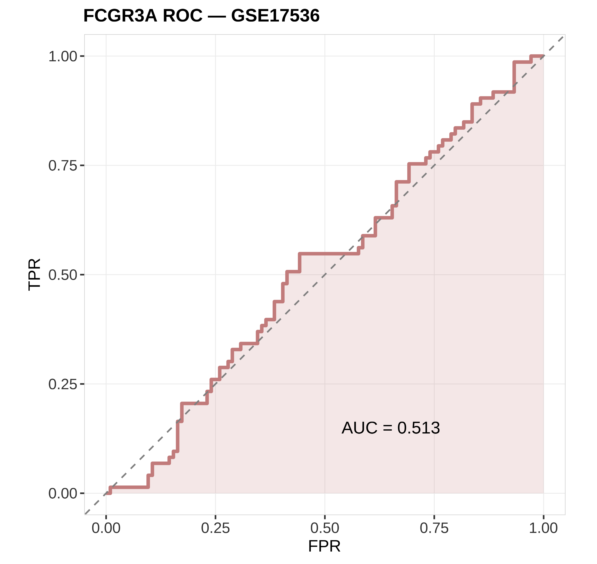

状态：PASS
sourced: 运行骨架_runSkeleton.R
data_provenance: REAL — GSE17536 real_GSE17536_FCGR3A_OS_for_ROC.csv（山水临床嵌入）。
"skill","stage","n_rows","n_cols","n_samples","group_source","toy","data_provenance","accession","sourced_skill_scripts","notes","checked_at" "DiagnosticROC","post",177,2,73,"GSE17536 FCGR3A vs OS event ROC",FALSE,"REAL","GSE17536","sourced: 运行骨架_runSkeleton.R","AUC=0.513; data_provenance=REAL","2026-07-19 20:48:39"

REAL GSE17536：FCGR3A 连续分 vs OS event 的经验 ROC（AUC=0.513）。样例为预后关联演示，非临床诊断声明。data_provenance=REAL。
生成时间：2026-07-19 20:48:40 · 报告规范：统一交付规范_DeliveryStandards · 版本 v1